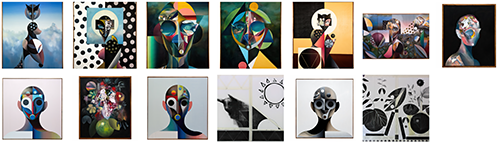
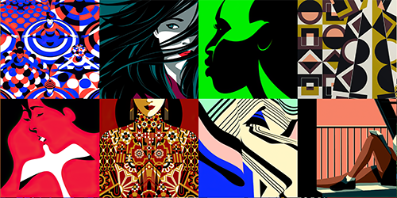
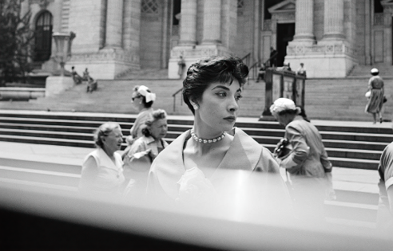

these are a few artists who inspire me
ryan hewett

his paintings are both geometric and fluid, his use of color and shape
makes me want to recreate his work in a digital space.
malika favre

her graphic art and illustrations are so simple, yet so stunningly complex. she seems to be
able to do anything, and makes it look so easy. when I think of the type of career i aspire to have,
malika's is it.
vivian maier

not only are her photographs rich and captivating, but her story is one in a million.
her story and her body of work could have been lost forever and the world may never have learned
about the genius of vivian maier.